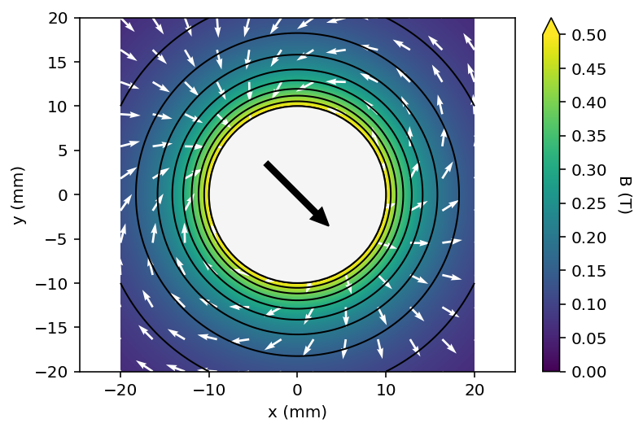
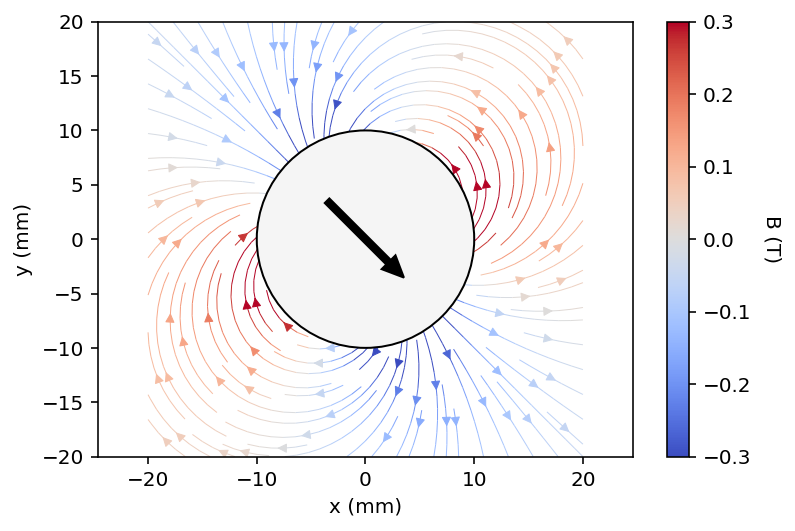

Pymagnet
User friendly magnetic field calculations in Python


Getting Started
Installing pymagnet can be done using
python -m pip install pymagnet
For plotting support, install with the optional plots extra:
python -m pip install pymagnet[plots]
Pymagnet is a collection of routines to calculate and plot the magnetic field due to arbitrary 2D and 3D objects, like cubes or cylinders, as well as complex non-convex structures stored in STL files. The library can also calculate the magnetic forces and torques on one magnet due to all other magnets in the system.
The approach assumes the magnets are uniformly magnetised, and fully transparent to magnetic fields. There are some drawbacks to this compared to Finite Element Methods (FEM), but with the advantage of significantly faster calculations.
The current version is written in Python with some speed up using Numpy and Numba, but the backend is being ported to Rust for improved performance.
Features
This code uses analytical expressions to calculate the magnetic field due to simple magnets. Key features include:
- TOML configuration: Define and run simulations declaratively from config files
- Numba-accelerated mesh calculations: Up to 247x speedup for STL magnet fields
- Flexible point generation:
slice3D()for planar slices,grid3D()for volumes - Force and torque calculations: For analytical shapes and STL meshes
Supported magnet types:
- 3D: cubes, prisms (cuboids), cylinders, spheres


- 2D: rectangles, squares, circles


and complex compound objects:
- 3D: Polyhedra stored as STL meshes
- 2D: Polygons constructed from collections of line elements
There are helper functions to plot the data as line, contour, slice, and volume plots, but the underlying data is also accessible.
Prerequisites
Ensure you have Python version >= 3.13.
Core Dependencies
- numpy (>=2.0.1)
- numpy-stl (>=3.1.2)
- numba (>=0.60.0, <=0.64)
Optional Dependencies (for plotting)
- matplotlib (>=3.9.2) - for 2D plots
- plotly (>=5.23.0) - for 3D interactive plots
Install with plotting support:
pip install pymagnet[plots]
TOML Configuration
Pymagnet supports a declarative TOML-based configuration system. Define your magnets, grids, and plots in a .toml file and run simulations from the command line. See the Configuration page for details.
Warning
- Rotate spheres using \(\alpha\), \(\beta\), \(\gamma\), as the magnetisation is always along \(z\), the magnetisation angles \(\theta\) and \(\phi\), do not exist.
Examples
Examples can be found in the repository.
Usage
Forms of this library have been used in a number of projects including Liquid flow and control without solid walls, Nature 2020.
Licensing
Source code licensed under the Mozilla Public License Version 2.0
Documentation is licensed under a Creative Commons Attribution-ShareAlike 4.0 International (CC BY-SA 4.0) license.
This is a human-readable summary of (and not a substitute for) the license, adapted from CS50x. Official translations of this license are available in other languages.
You are free to:
- Share — copy and redistribute the material in any medium or format.
- Adapt — remix, transform, and build upon the material.
Under the following terms:
- Attribution — You must give appropriate credit, provide a link to the license, and indicate if changes were made. You may do so in any reasonable manner, but not in any way that suggests the licensor endorses you or your use.
- ShareAlike — If you remix, transform, or build upon the material, you must distribute your contributions under the same license as the original
- No additional restrictions — You may not apply legal terms or technological measures that legally restrict others from doing anything the license permits.
Contribution
Unless you explicitly state otherwise, any contribution intentionally submitted for inclusion in the work by you shall be licensed as above, without any additional terms or conditions.